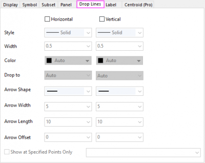
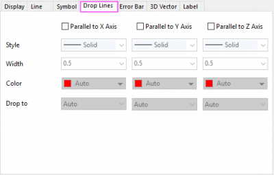

You can add drop lines to either axis in any 2D data plot type that incorporates plot symbols, and to any plane in 3D scatter and trajectory graphs.
|
2D Graph |
3D Scatter, 2D/3D Ternary Graph |
 |
 |
For 2D graph in cartesian coordinate, Horizontal or Vertical drop lines are optional.
For 2D ternary and 3D (including 3D Ternary) graph, drop lines Parallel to X/Y/Z Axis are optional.For 3D Scatter/Trajectory graph, Drop Lines tab is available on both Original and XY/ZX/YZ Projection level: On Original level, drop lines on all three directions(parallel to X/Y/Z axis) are optional; but on XY/ZX/YZ Projection level, only two directions along the axes of current panel are optional, such as on XY Projection level, you are only allowed to turn on the drop lines parallel to X and Y axis. For 3D Ternary graph, only drop lines parallel to vertical Z axis(Zh) is available. In contrast, all three directions are allowed to add drop lines for 2D Ternary graph.
Select the Horizontal/Vertical or Parallel to X/Y/Z Axis check boxes to display horizontal or vertical lines from each data point symbol to the bottom X or left Y axis. Then select the style, width and color for the drop-line with the Style, Width and Color drop-down lists.
You can separately specify the color of the drop lines, using the Color Chooser just like that for the data plots.
When you select Auto from the Color drop-down lists in the Single sub-tab, Origin uses the color selected from the Symbol Color or the Edge Color buttons on the (Plot Details) Symbol tab.
You can specify a desired color to apply it to all drop-lines at current direction. If you want to define and use a custom color for the drop lines, you can refer to this page.
In the By Points sub-tab of Color Chooser, you can use a dataset to control the drop line color.
Just like the columns/bars in Bridge Chart, there is a special type of dataset color control for the drop lines:
For the drop line color, when Drop to Next Data Plot is selected, Y Value: Plus-Minus will show up in the By Points sub-tab of color chooser:
Like Y Value: Plus-Minus-Total in bridge chart, selecting this method will also grey out the colors after the 2nd one of the color list.
Note: This special color control is also available for some other graph objects of other plot types:
|
You can use this drop-down list to specify which line(axis line or additional line) or surface(axis panel or surface from 3D data) the current drop lines should be dropped to.
For 2D Scatter/Line graph in cartesian coordinate, four options are available under this drop-down list:
For 2D Ternary graph, two target axis lines are available under this drop-down list:
For 3D Scatter/Trajectory graph, four options are available under this drop-down list:
For 3D Ternary Scatter graph, only Parallel to Z Axis is available which can be used to add drop lines along vertical Z axis(Zh).
For 2D Scatter/Line graph in cartesian coordinate, you are allowed to add arrows at the end of the drop lines.
You can specify the Arrow Shape, Arrow Width and Arrow Length for the arrows. The unit of the arrow width and arrow length is points.
For the ternary and 3D graphs, Origin doesn't support to add arrows at the end of the drop lines.
This control can be used to add drop lines at specific data points or at specific x values.
Here, five syntaxes are supported:
Please note, when you are adding the drop lines by specifying the X/Y values, if the specified x/y values are not dropped on the data points, the interpolation will be performed to locate the specified X values at the connect lines between the nearest data points. And, only when the Line Connect had been set to Straight, the drop lines specified by X/Y values will work. See an example as below: